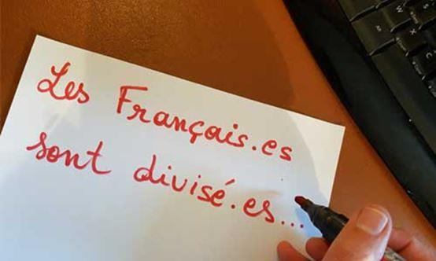
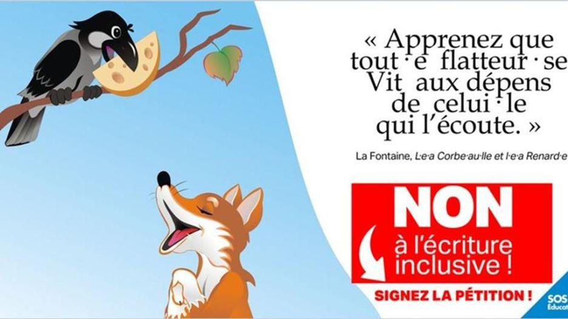
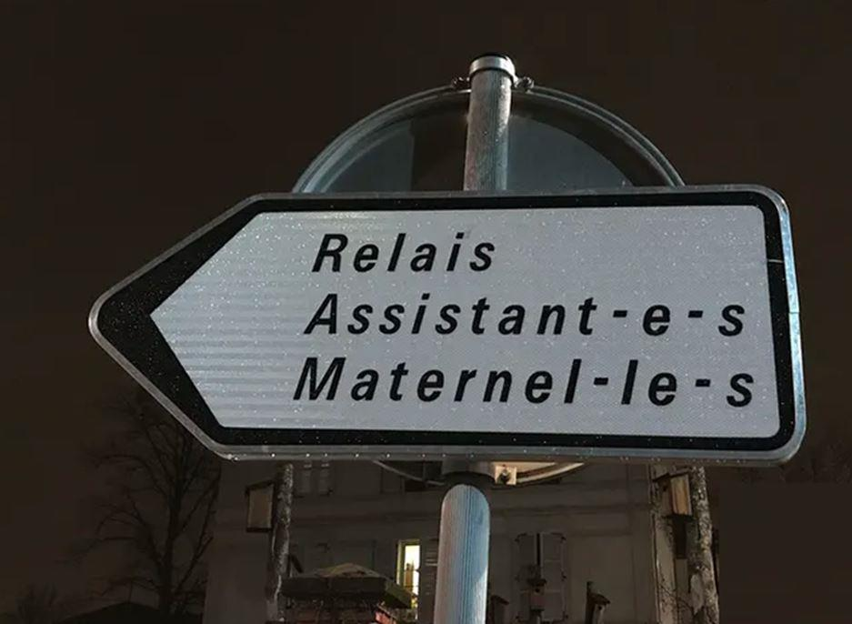

L'écriture inclusive a un avantage inestimable, qu'il faut lui reconnaître : elle permet de reconnaître chez son utilisateur, au premier coup d'œil et sans coup férir, au mieux une tendance moutonnière à suivre aveuglément n'importe quelle mode, au pis l'imposture et la tartuferie – ou encore la bêtise la plus crasse.
Bref, c'est un peu comme un escroc portant une pancarte affichant ses mauvaises intentions : très utile pour savoir qu'il vaut mieux se méfier.
Plaisanterie à part – mais ce n'est pas réellement une plaisanterie –, si quelques égarés de bonne foi l'ont utilisée un temps, convaincus par les arguments du « camp du bien » qui promettaient d'obtenir enfin l'égalité entre hommes et femmes par la grâce de quelques points médians, aujourd'hui force est de constater que les apôtres de l'écriture inclusive sont, toujours et sans exception, également les champions de tout ce qui menace d'éteindre les Lumières qu'il avait fallu tant de temps pour allumer.
Comment s'en étonnerait-on ? Côté bêtise et inculture, l'écriture inclusive révèle l'incapacité à comprendre la différence entre « genre » et « sexe », entre la grammaire et la biologie, et dénote un manque d'esprit d'observation – d'esprit tout court – remarquable : ces gens n'ont donc jamais pris conscience qu'une personne, une sommité, un mannequin... peuvent être un homme ou une femme, pour ne pas savoir que si la langue française, dépourvue du neutre, attribue un genre grammatical à chaque mot, ce neutre existe sémantiquement de toute évidence ? Et de toute évidence aussi, c'est ce neutre sémantique que l'on retrouve dans les «ils, eux, ceux », etc., lesquels peuvent être, comment dire... parfaitement inclusifs.
Côté imposture et tartuferie, qui se sert de cette absurdité, qui l'a inventée, sinon des « intellectuels » en mal d'intelligence, des auteurs en mal de reconnaissance, des politiques en mal d'électeurs et surtout d'idées ! Hélas, avec la mode du « wokisme », lequel tend de plus en plus vers une Terreur d'opérette, il devient impossible, sous peine d'excommunication dans les médias et sur les réseaux sociaux, de lutter contre une imbécillité dès lors qu'elle a été estampillée politiquement correcte.
Grâce à quoi, ou à cause de quoi, il suffit de s'emparer de l'imbécillité en question, de la couvrir de grands mots tels « féminisme », pour poser au révolutionnaire quand on est un précieux ridicule. Il suffit de parsemer son discours de points pour se convaincre d'avoir inventé l'égalité, ce qui est plus facile qu'étudier, travailler, et inventer l'eau chaude ou d'autres bienfaits pour l'humanité.
Tout cela pourrait prêter à rire, ce serait à tort. On laisse une minorité, minuscule mais bruyante, imposer contre toute logique, et contre l'immense majorité des francophones qui ne s'en rendent pas toujours compte, un vrai danger.
« L'inclusif » est en réalité une machine – un machin ? – à exclure.
Des communes s'imaginent faire preuve de modernité en envoyant des courriers illisibles, et découragent les administrés de s'intéresser aux affaires qui les concernent ; il doit arriver, au vu de la gestion des mairies en question, que ce soit un peu fait exprès.

Photo à Fontenay-sous-Bois, 2018
De prétendus médias d'information, jusque – surtout ! – dans le service public, sont fiers de se prendre pour des pionniers de l'égalité des sexes, au point d'en oublier d'informer des reculs des droits des femmes partout dans le monde.
Quant aux enfants, trop bêtes pour qu'on leur explique les notions de genre, autant leur interdire aussi d'apprendre à lire – les vrais pédagogues s'accordent à dire que c'est impossible avec l'écriture inclusive. Impossible aussi de lire pour tous les adultes, bien plus nombreux qu'on pense, qui ont des difficultés ou des handicaps.
Cela n'empêche pas des enseignants, des auteurs et éditeurs de manuels scolaires, d'introduire sournoisement dans les écoles une écriture absurde qui risque de coûter très cher, en termes de désintérêt de la francophonie dans le monde pour une langue devenue ridicule, et de générations d'illettrés incapables de penser par eux-mêmes – faut-il encore répéter que sans les mots la pensée ne peut se construire ?
Massacrer les mots, la langue, c'est aussi massacrer la pensée. Quelle meilleure preuve que celle donnée par les tenants de l'écriture inclusive eux-mêmes ? On n'a jamais vu un texte cohérent, structuré, exprimant des idées, écrit en inclusif : on lit des slogans, des imprécations, de la propagande, ou de brèves informations relevant de l'infox. Bienvenue chez Orwell.
Partager cette page